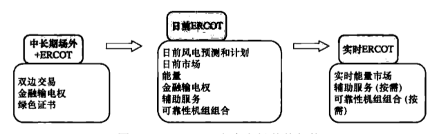
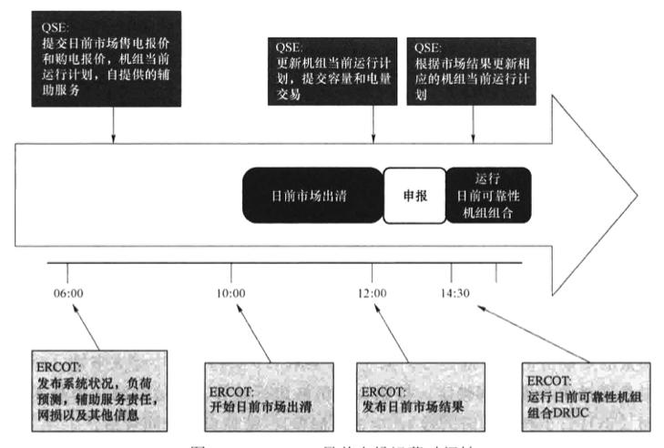
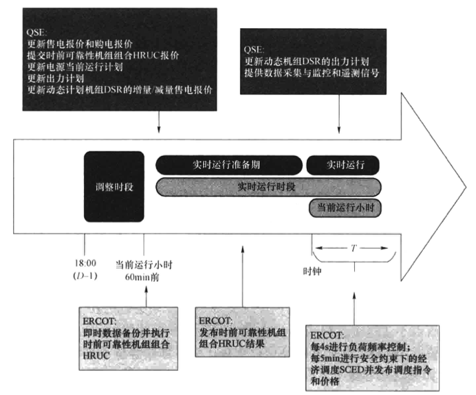
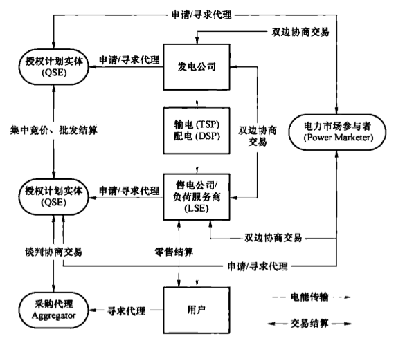
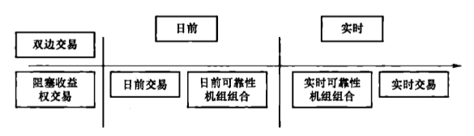
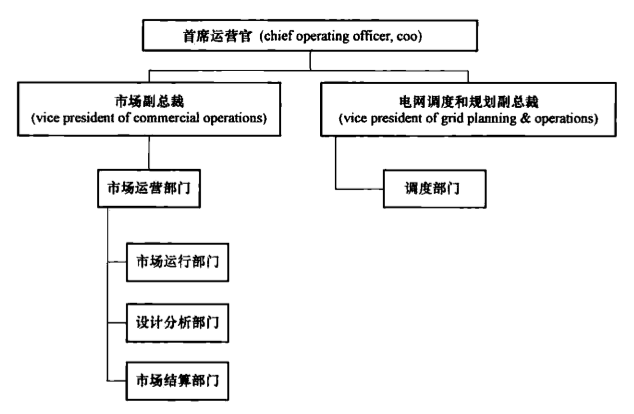
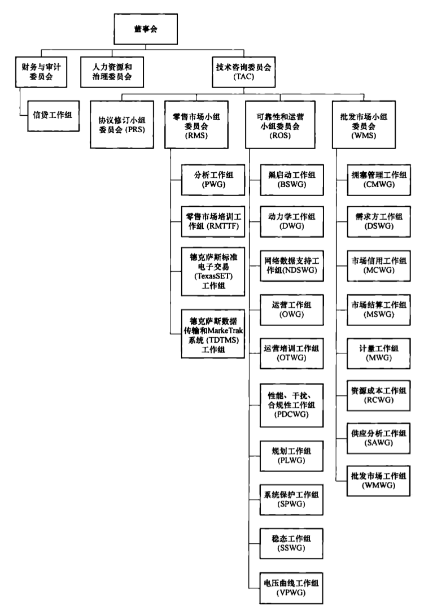
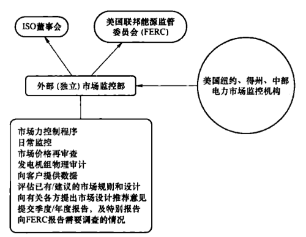

美国 ERCOT 电力市场
美国ERCOT电力市场是美国五大电力市场之一，也是最早开放零售侧竞争的电力市场，其风电装机容量在2021年12月达30.11GW，是北美电力市场中风电容量最大的电力市场，由美国得州电力管理委员会美国得州电力可靠性委员会（Electric Reliability Council of Texas，ERCOT）管理。本章主要从市场概况、建设历程、架构及特点、交易流程、组织与职责分工、价格机制、阻塞管理机制、监管与风险防控机制，以及绩效评价等方面介绍得州电力市场。
8.1 电力市场概况
8.1.1 电源结构
截至2021年底，美国ERCOT电力市场发电装机容量及增长情况如表8-1所示。2021年装机容量相较2020年增长3.46GW，主要由光伏发电装机增长驱动。
表8-1
美国ERCOT电力市场发电装机容量及增长情况
| 电源类型 | 2021 年装机容量（GW） | 装机容量占比（%） | 相较 2020 年增长容量（GW） | 增长百分比（%） |
| 全部 | 138.89 | 100.00 | 3.46 | 2.55 |
| 燃煤 | 19.27 | 13.87 | -0.72 | -3.60 |
| 水电 | 0.74 | 0.53 | 0.03 | 4.15 |
| 天然气 | 77.46 | 55.77 | -0.25 | -0.32 |
| 核电 | 5.14 | 3.70 | 0.00 | 0.00 |
| 风电 | 30.11 | 21.68 | 2.04 | 7.28 |
| 光伏发电 | 4.88 | 3.51 | 2.44 | 99.64 |
| 其他 | 1.30 | 0.94 | -0.08 | -5.85 |
8.1.2 电网结构
得州电力系统是北美三大独立电力系统之一，共有700多万电力用户，总发电装机容量达130GW，最高负荷达75GW，拥有总长60338km的输电线路。得州电网是一个独立电网，和外州没有交流互联，只通过5条直流联络线与美国东西部电网和墨西哥相联，这5条直流联络线的总容量接近1.1GW。ERCOT管理超过74800km的高压输电线路和550多台发电机组。
8.1.3 电力供需
截至2021年底，美国ERCOT电力市场各电源发电量情况如表8-2所示。
表8-2
美国ERCOT电力市场各电源发电量
| 电源类型 | 发电量（TWh） | 占比（%） |
| 全部 | 483.562 | 100.00 |
| 燃煤 | 88.782 | 18.36 |
| 水电 | 1.117 | 0.23 |
| 天然气 | 234.942 | 48.59 |
| 核电 | 40.211 | 8.32 |
| 风电 | 100.049 | 20.69 |
| 光伏发电 | 14.137 | 2.92 |
| 其他 | 4.324 | 0.89 |
截至2021年11月，各行业用电量情况如表8-3所示。
表8-3
美国ERCOT电力市场各行业用电量情况
| 行业类别 | 用电量（TWh） | 占比（%） |
| 全部 | 426.86 | 100.00 |
| 居民用电 | 15.41417.27 | 36.87 |
| 商业用电 | 145.1717147.36 | 34.55 |
| 工业用电 | 125.1111121.70 | 28.53 |
| 运输用电 | 0.17 | 0.04 |
8.2 电力市场建设历程
1970年，得州电网体系（Texas interconnected system，TIS）成立了ERCOT，以符合北美电力可靠性委员会（North American Reliability Council，NERC）的要求。
1995年，得州立法机构修订了公共事业管理法案，要求得州境内各电力公司开放电网，以促进电力批发市场的改革。
1996年8月21日，得州公用事业管理委员会（public utility commission of Texas，PUCT）正式指令ERCOT组建独立系统运行机构；9月11日，ERCOT董事会对ERCOT进行重组，正式作为非营利性ISO启动运行，成为美国第一个系统独立调度及控制中心。
1999年5月21日，得州立法机构通过了参议院第7号法令。这一法令要求得州建立一个富有竞争性的电力零售市场，并必须在2002年1月1日投入运行，使得州所有的电力用户都能享受到选择发电厂商的权利；同时要求所有上市电力公司分拆为三个独立的公司，即发电公司、输配电公司和电力零售公司。
2001年，ERCOT基于区域电价的电力批发市场正式投入运行。
2002 年 1 月 1 日，ERCOT 电力零售市场投入运行。PUCT 设定了 20 余项准则，用于监管零售侧从管制化向竞争性市场过渡，包括新电力零售商（retail electric provider，REP）的准入要求及运行准则以及为原有公用事业公司所设定的浮动性保底电价。
2003 年，PUCT 要求 ERCOT 开始研究设计基于节点电价的电力批发市场。2006 年，ERCOT 基于节点电价的电力批发市场相关设计通过审批。2010 年，ERCOT 正式启动基于节点电价的电力批发市场。
2007年1月，原有公用事业公司所属的电力供应商的价格管制被彻底取消。
2010年，ERCOT成功推出基于节点市场的区域边际定价机制。
8.3 电力工业结构现状
得州采用“输配一体化，发电、售电独立”的管理体制，PUCT授权ERCOT负责得州电网的调度运行管理，同时承担电力交易机构的职责。具体包括发电、输配电、售电环节。
（1）发电环节。包括改革前原有的三大发电厂商，即得州公用事业电力公司（TXU Electric）、休斯敦照明和电力公司（Houston Lighting & Power，HL&P）、美国电力公司（American Electric Power，AEP），以及改革后新加入的独立发电厂商。
（2）输配电环节。按区域分为776大输配电公司，即美国电力公司（American Electric Power Co Inc，包括AEP Central、AEP North）、中点公司（CenterPoint）、昂科公司（Oncor）、沙里兰－麦卡伦公司（Sharyland-McAllen）、沙里兰公用事业公司（Sharyland Utilities）、得克萨斯州－新墨西哥州电力公司（Texas-New Mexico Power Company，TNMP）。输配电费用由PUCT和市场独立监管机构进行数据汇报和监控。
（3）售电环节。目前 ERCOT 市场中共有 100 多家售电公司正常营业，具有代表性的有注入能源公司（Infuse Energy）、资深能源公司（Veteran Energy）、微风能源公司（Breeze Energy）、定向能源公司（Direct Energy）等。
8.4 电力市场架构及特点
本节主要介绍中长期市场、日前市场、可靠性机组组合市场、实时市场、金融输电权市场及新能源参与市场相关机制。
ERCOT 市场参与者主要分为授权计划实体（qualified scheduling entities，QSE）、负荷服务商（LSE）、输电服务供应商（transmission service providers，TSP）、配电服务供应商（distribution service providers，DSP）和电源实体（resource entity，RE）五类。其中 QSE 代表电源实体和售电公司参与日前和实时市场，与 ERCOT 进行数据对接和结算。QSE 可以同时拥有发电机和负荷，或者两者之一，或者是两者皆无的纯金融买卖参与者。
ERCOT 电力市场总体架构如图 8-1 所示。ERCOT 节点市场于 2010 年 12 月正式上线运行，主要包括中长期市场、能量和辅助服务联合优化的日前市场、可靠性机组组合和实时市场。

图 8-1 ERCOT 电力市场总体架构
8.4.1 中长期市场
中长期市场主要开展日以上的中长期电力交易，通过签订中长期交易合同，避免自由市场所带来的短期价格的不确定性。据统计，ERCOT实时市场中绝大多数（超过90%）电能交易是通过中长期合同锁定，按照合同价格进行结算。双边合同几个基本要素包括交付时间（年月日小时或者时间段）、电力（MW）、结算点和合同价格。
ERCOT 的大多数中长期合同本质上是一种金融合同（差价合约），买卖双方不需要拥有发电机或负荷，在执行环节也不需要按照合同发电或者用电。ERCOT 没有强制要求合同双方必须向 ERCOT 提交所签订的合同，但是合同双方可以选择自愿提交，让 ERCOT 帮助结算。根据合同性质，是否向 ERCOT 提交合同不会改变其最终的结算结果，只是会改变通过 ERCOT 的结算量。
8.4.2 日前市场
ERCOT 日前市场是集中出清的电能量市场，主要目的是为下一个运行日安排电能和辅助服务，提高价格确定性并发现价格，让市场成员可以规避实时市场价格波动的风险。日前市场的参与是自愿的，机组和负荷可以自愿参与。
日前市场以最大化社会福利为优化目标，联合优化售电报价、购电报价、辅助服务出售报价和点对点责任权购买报价。日前市场中的售电报价包含发电机组的三部分售电报价和虚拟的售电报价。日前市场中的购电报价都是虚拟的。虚拟的售电报价和购电报价必须在结算点上报价，任何QSE都可以报价。ERCOT日前市场对能量、辅助服务和日前金融输电权进行联合优化，同时进行一天内全部时间段之间的耦合优化来降低总成本，日前市场中不仅考虑发电资源的各种物理约束，同时考虑网络安全校核，出清算法是安全约束下的机组组合（SCUC）。SCUC包含机组组合UC和网络安全校核NSA两个部分，这两部分互相迭代求解直到满足收敛条件，最终结果即为出清结果。机组组合UC优化算法是混合整数优化。日前市场的研究区间是第二天运行日的一整天24h，每个小时作为一个研究时间点，所以一共有24个时间点。联合优化的辅助服务主要包括上调频和下调频容量、响应（事故）备用和非旋转备用，ERCOT日前市场的运行时间轴如图8-2所示。

图 8-2 ERCOT 日前市场运营时间轴
日前市场所有电能出清量都是按照日前结算点价格（day-ahead settlement point price，DASPP）进行结算。辅助服务出清量按照对应的辅助服务价格进行结算。点对点责任权购买报价出清量按照接收点和输出点之间结算点价格的差价进行结算。日前市场的目标函数是最大化社会效益，所以有可能提交三部分售电报价机组被指令开机之后，其在日前市场的电能和辅助服务收益不足以支付覆盖它的运行成本（开机成本 + 最低出力成本 + 最低出力到中标量的成本），这种情况下，日前市场结算就会补偿给机组运行成本和收益之间的差值，这种补偿叫做开机补偿付款。日前市场中所有开机补偿付款的支出会按照 QSE 虚拟报价出清量和点对点责任权报价中标量的大小按比例向 QSE 收费。ERCOT 购买辅助服务的支出会按照 QSE 短缺的辅助服务的大小按比例向 QSE 收费。
8.4.3 可靠性机组组合市场
可靠性机组组合（RUC）的主要目的是保证系统里有足够的在线发电容量，来满足系统的负荷预测。可靠性机组组合也通过运行网络安全校核来监测和保证输电网络的安全。其用来填补金融性的日前市场和物理实时市场中的缺口，以保证系统有足够的在线发电容量来满足第二天负荷预测的需求，从而保证系统的可靠安全运行。日前市场出清是根据自愿的虚拟售电和购电报价，而不是系统的负荷预测。日前市场中的机组组合有可能不能满足实时的电量和辅助服务要求，因此需要可靠性机组组合来购买足够的发电机容量，来满足负荷预测和辅助服务要求。
RUC 在日前市场结束之后出清，根据区间和功能的不同，可以分为日前可靠性机组组合和时前可靠性机组组合。
可靠性机组组合是一种增量集中机组组合，ERCOT绝大多数机组都是自开机，通过提交当前运行计划来反映每个机组的每小时开机状态。可靠性机组组合以最小化系统运行成本为优化目标，在满足系统的各种安全约束的前提下，优化三部分售电报价中的启动报价和最小出力报价，出清软件也是安全约束下的机组组合（SCUC）。可靠性机组组合的结果是物理性的，必须物理执行。
可靠性机组组合结算可分为以下两类：
（1）RUC 开机补偿付款。对每个 RUC 指令开机的机组，结算时会计算这个机组的启动成本和最小出力成本之和，定义为机组的保障成本。如果机组在实时发电根据实时市场价格结算的收益小于这个保障成本，ERCOT 会通过开机补偿付款给 QSE 来补偿成本和收益之间的差值。ERCOT 会把开机补偿付款按比例对那些容量不足引起 RUC 指令开机的 QSE 收费，如果这些容量不足收费还不能支付开机补偿付款，ERCOT 会把不足的差值按照 QSE 的负荷大小按比例对 QSE 进行收费。
（2）RUC 追回利润索款。如果机组在实时的收益超过了保障成本，ERCOT 会追回部分利润，追回利润索款的目的是鼓励 QSE 自启动来参与市场。ERCOT 追回利润索款的利润会根据 QSE 负荷的大小按比例分配给 QSE。
8.4.4 实时市场
实时运行主要有两个目的：① 可靠性管理，平衡系统的发电和负荷并保证输电系统不越限；② 在满足可靠性约束条件下对发电机进行最优调度，从而最小化系统的生产成本。实时运行的核心是安全约束下的经济调度（SCED）和能量管理系统（EMS）。EMS 和 SCED 紧密相连，互相配合。EMS 的数据采集与监控子系统采用 ICCP 协议通过遥测信号和 QSE 的电源（发电机或负荷电源）以及输电供应商（TSP）进行通信。QSE 通过遥测信号告知 ERCOTEMS 机组的当前运行状态：包括并网状态（在线/离线）、当前出力、爬坡能力、最高出力限值、最低出力限值、辅助服务要求和辅助服务计划。EMS 为 SCED 提供实时网络安全校核。另外 EMS 中的电源限值计算（resource limit calculator，RLC）子系统会根据电源的遥测信号，计算每个电源的 5min 内的可被调度的最高调度限值和最低调度限值，这个最高和最低调度限值的计算考虑了电源当前的出力和 5min 的爬坡能力。
SCED 每 5min 自动运行一次，SCED 5min 的调度基点会传递给 EMS，EMS 的负荷频率控制模块每 4s 运行一次，根据实时频率和设定频率（60Hz）的偏差，在 SCED 计算获得的 5min 调度基点的基础上部署调频备用服务来平衡实时的发电和负荷。ERCOT 实时市场的运行时间轴如图 8-3 所示。

图 8-3 ERCOT 实时市场运营时间轴
实时网络安全校核 NSA 通过 EMS 中的状态估计（state estimator，SE）子系统基于遥测信号进行系统基本潮流计算。EMS 中的实时预想事故分析（real time contingency analysis，RTCA）子系统根据状态估计基本潮流的结果计算系统在各种预想事故下的潮流和线路越限情况。系统调度员根据这些越限结果，按照事先定义好的规程决定是否将这些网络约束传递给 SCED。
SCED 优化算法是二次规划算法，其设计目的是同时管理电能、系统发电和负荷平衡以及网络阻塞。SCED 中的安全约束包括系统平衡约束、电网安全约束和机组物理运行约束。SCED 进行全电量出清，所有在线的机组必须参加实时市场，必须向 ERCOT 提交售电报价曲线 EOC 或者自调度的出力计划。售电报价曲线以小时为区间，出力计划以 5min 为区间。对于提交出力计划的机组，SCED 会给这个机组创建一个代理售电报价曲线。代理售电报价曲线在出力计划处的报价是 -249.99 美元/MWh，在最低出力限值 LSL 的报价是 -250 美元/MWh，在出力计划到最高出力限值 HSL 之间的报价是系统报价帽 SWCAP。这个代理报价会保障机组在正常电价范围的时候被调度在出力计划，但是当 LMP 达到系统报价帽的时候，机组会被向上调度直到最高出力限值，而当 LMP 降到 -250 美元/MWh，在最低出力限值 HSL 之间的报价是系统报价帽 SWCAP。
美元/MWh 的时候，机组会被向下调度直到最低出力限值。双边合同并不直接参与实时市场的优化出清，SCED 运行时并不读取双边合同的信息。SCED 在满足安全约束的条件下，根据机组提交的售电报价 EOC 和出力计划，可控负荷电源提交的实时购电报价来调度电源从而最大化社会福利（即基于购电报价的收益减去售电报价的成本）。SCED 出清结果包含每个电源的调度基点和每个发电机的节点边际电价 LMP。ERCOT 在这些基准出力的基础上，根据需要来部署各种辅助服务，从而控制系统频率和解决各种潜在的系统可靠性问题。
SCED 采用两步法来缓解可能出现的非竞争性的网络拥堵。第一步，运行 SCED 来决定参考节点边际电价。在第一步中，SCED 只遵守竞争性网络约束，不考虑非竞争性网络约束进行优化，根据在线机组的售电报价、代理售电报价以及可控负荷电源的购电报价来决定参考节点边际电价。这里竞争性网络约束指此网络约束通过规定测试证明不受市场力影响，即没有 QSE 的发电机对这个约束有较大影响；非竞争性网络约束指此约束受市场力影响，即存在 QSE 的发电机对这个约束有较大影响。第二步，运行 SCED 来产生基准出力，影子价格和节点边际电价。在第二步中，SCED 同时遵守竞争性网络约束和非竞争性网络约束。所有在线发电机的售电曲线必须被限制不小于参考节点边际电价和机组对应的市场力缓解地板报价（mitigated offer floor）两者的较小值。同时，对于那些根据约束竞争性测试（constraint competitive test，CCT）决定的符合需要进行市场力缓解的机组，其售电报价必须被限制不高于参考节点边际电价和机组对应的市场力缓解报价帽（mitigated offer cap）两者的较大值。
得州电力市场起初采用区域电价模式，并根据几个主要的输电断面将ERCOT分成4个阻塞管理区域。区域电价模式的优点是市场建设比较容易，市场对电网运行模型的准确度要求较低，市场建设相对迅速；不足之处是市场模型和运行模型不一致，价格信号不够细致，特别是区域内的阻塞费用很难直接分配。由于没有精细的节点价格信号，区域市场模型不能很好地解决网络阻塞费用分配的问题，许多发电厂不但没有足够的意愿去消除线路阻塞，有的反而会故意加重阻塞以获利。2003年，ERCOT重新设计了基于节点电价的电力市场，2010年12月正式落地启动，在ERCOT范围内产生了超过4000个节点。2021年，ERCOT已有超过10000个节点。节点市场通过更加细分的定价模式提供价格信号，在资源层面通过调度提高了输电效率，减少了原有由基于区域边际成本所得出的结算价格带来的阻塞成本，同时也解决了区域内阻塞费用的直接分配问题。
8.4.5 金融输电权市场
金融输电权是一种金融避险工具。其主要的两种结算方式包括点对点责任权和点对点选择权。可以通过金融输电权拍卖、预先分配和双边交易三种方法获得金融输电权。金融输电权拍卖和分配以月为单位，并分成谷值、周间峰值、周末峰值等时段。金融输电权拍卖结束后，ERCOT就会用拍卖出清价格对中标的出售和购买的金融输电权和金融输电权持有者进行结算。金融输电权的拍卖收益会按照QSE拥有负荷的大小按比例分配给QSE。
金融输电权持有者持有的金融输电权在日前市场中按照日前市场结算点价格（day-ahead settlement point price，DASPP）进行结算。点对点责任权的结算价格是（接收点 DASPP－输出点 DASPP），其结算价格可正可负，所以既可能欠款也可能收款。点对点选择权的结算价格是 MAX[（接收点 DASPP－输出点 DASPP），0]，所以其结算价格是非负的，只会收款不会欠款。
金融输电权市场是按照小时进行结算的。日前市场结算产生的每小时拥堵租金会用来付钱给金融输电权，如有多余，多余的钱会被放入一个金融输电权平衡账户。如果不足，欠费就会被记录下来，积累到月底的时候，就会用当月金融输电权平衡账户里积攒的钱来付这些欠费。如果还有剩余，就会按照QSE负荷大小按比例分配给QSE。
8.4.6 新能源参与市场相关机制
根据美国风电数据统计，约70%的风电通过签订长期购电协议（power purchasing agreement，PPA），确保所发电量在未来15～20年合同期内以协约价格进行出售。PPA是一种远期的电力双边交易，选择签订PPA的风电企业将得到长期有效的价格保证，不再受短期市场价格波动影响。部分PPA在风电项目规划建设初期就已签订，使风电通过锁定发电价格来保障未来的收益，有利于得到贷款融资等财务支持和项目的建设与运营，为促进对新能源的投入和持续发展提供了动力。
风电企业与购电方还会达成其他类型双边交易，合约有效期从几小时到数日、月、年不等，按规定的交易电量和电价成交，规避买卖双方在日前和实时市场面临的电价波动风险。风电企业和购电方可选择在日前或实时市场关门截止前通过系统向ERCOT申报双边交易，但内容不包括交易价格。申报的双边交易将被视为风电和购电方的金融责任和权利，与实际的发、用电无关；由ERCOT负责与双方分别进行结算。
部分风电企业还会和购电方签订电力差价合约，当ERCOT市场成交价格高于双边交易价格时，风电企业向购电方支付价格差；当市场成交价低于双边交易价格时，购电方向风电企业支付价格差。这时，风电企业和购电方不在ERCOT申报双边交易信息，分别以市场价格与市场进行结算。实际的资金流是双边交易的价格，通过金融对冲，风电和购电方有效规避了市场价格波动的风险。
在 ERCOT 节点电力市场中，在风电大发的时间段内，当风电资源聚集的地区出现送出通道约束受限等电网阻塞，输电线路或变压器等电网元器件产生影子价格，造成日前或实时市场在不同节点产生不同电价。这时，在风电难以送出的得州西部地区市场价格低甚至出现负电价，负荷重载的受电地区如休斯敦等城市市场价格高。这种情况发生时，如果风电签订的双边交易交付点为负荷侧，风电还需承担运送交易电量的市场阻塞费用，单位阻塞价格为负荷点和电源点的市场电价差值。因此，这部分风电倾向于购买金融输电权作为避险工具，事先锁定阻塞费用，规避因市场价格不确定性带来的经营风险。
风电企业在 ERCOT 市场中进行实际发电阻塞费用风险管理的策略主要包括 2 步：① 在 ERCOT 年/月度或双边市场中，购买点对点的金融输电权规避日前市场阻塞费用；② 在
日前市场中，购买点对点责任权来规避实时市场阻塞费用。在第一步中购买的金融输电权在日前市场中兑现，作为持有者，风电将获得日前市场阻塞费用的收益，用来对冲在第二步中购买的金融输电权所付的费用。因此，如果风电企业持有同一种点对点金融输电权，在日前市场的实际资金流为零。利用提前在年/月前或双边市场中通过购买的金融输电权，规避了风电在实时发电环节可能面临阻塞费用波动的经营风险。
8.5 电力市场交易流程
得州作为美国电力市场改革最为成功的地区之一，一是因为其早在2002年就开启了零售市场，用户自主选择电力供应商比例超过30%，连续8年被评为美国和加拿大最具竞争性的电力零售市场；二是其金融性市场设计完善，应用到日前市场。
ERCOT 管理的得州电力市场主要包括：
（2）日前市场（DAM）。
（1）金融输电权市场。
（3）靠性机组组合（RUC）。
市场主体包括如下：
（4）实时市场（RTM）。
（1）ERCOT。负责得州电网运行和管理竞争性电力批发市场，也是ISO。
（2）授权计划实体（QSE）。得州电力市场不允许发电厂商和负荷服务商直接参与日前和实时市场，QSE作为发电厂商和LSE的代理与ERCOT进行日前及实时交易结算。
（3）发电厂商。具有发电能力的实体需在ERCOT注册成为电源实体。
（4）LSE。向顾客销或批发能源并在ERCOT注册的实体，包括零售电公司（REPs）及提供负荷或外部负荷的实体。
（5）电力商人。主要从事市场内电力倒卖交易，不需要售电资格。
（6）输电/配电服务供应商（DSP/TSP）。
（7）用户。
得州购售电市场交易与电能流的交易结构如图8-4所示。
其中，双边市场指买卖双方单独或者双方通过经纪人签订的用来交易电量的市场交易。合同任一方可以同时拥有发电机和负荷，或者两者之一，或者两者皆无（纯金融买卖市场参与者）。双边合同一般被用来规避实时市场价格风险，同时有些市场参与者通过双边合同进行套利。据统计，ERCOT实时市场中超过90%的电能量交易通过前期双边合同锁定，按照合同价格进行结算。双边合同几个基本要素有交付时间（年、月、日、小时或者时间段）、电能量（MW）、结算点、合同价格等。大多数双边合同本质上是一种金融合同，买卖方不需要拥有发电机或负荷，在实际执行中也不需要按照合同发电或者用电。
双边合同签订后，买方需要根据合同电量和合同价格支付给卖方，这是第一部分结算。ERCOT实时市场出清后，卖方需要根据合同电量和实时价格支付给买方，这是第二部分
结算。如果单纯考虑双边合同（不考虑合同双方在实时物理发电和负荷的抵消），结算公式如下：

图 8-4 得州购售电市场交易与电能流的交易结构
$$ 第一部分结算： 合同收款 = 合同付款 = 合同电价 \times 合同电量 $$
$$ 第二部分结算：实时收款 = 实时付款 = 实时电价 \times 合同电量 $$
同时考虑以上两部分结算：
$$ 卖方净收款 = 合同收款 - 实时付款 =( 合同电价 - 实时电价 )\times 合同电量 $$
$$ 买方净付款 = 合同付款 - 实时收款 =( 合同电价 - 实时电价 )\times 合同电量 $$
ERCOT 没有强制要求合同双方必须向 ERCOT 提交所签订的双边合同，但是合同双方可以选择自愿提交，让 ERCOT 帮助结算其双边合同。根据合同性质，是否向 ERCOT 提交双边合同不会改变其最终的结算结果，只会改变通过 ERCOT 的结算量。
得州电力市场交易根据是否有实物交割分为金融性与物理性两个方面，其中双边交易、阻塞收益权及日前交易是金融性的；可靠性机组组合交易及实时交易是物理性的。其中长期双边交易在这种时序市场交易中逐级细化。运行运营时序如表8-4和图8-5所示。
表 8-4
美国ERCOT电力市场运营时序
| 时间 | 组织流程 |
| D-1 日 6:00 | 公布最新的输电系统情况负荷预测、辅助服务计划等 |
| D-1 日 11:00 前 | 提交平衡的能量计划和自我安排提供的辅助服务计划 |
| D-1 日 11:00 | ERCOT 检查各 QSE 提交的计划是否有效，如发现无效计划则立即通知其合格计划体 |
续表
| 时间 | 组织流程 |
| D-1 日 11:15 前 | QSE 提交改正后的计划，ERCOT 再次检验新提交的计划 |
| D-1 日 13:00 前 | 更新计划并向 ERCOT 的辅助服务市场提交报价 |
| D-1 日 13:15 前 | QSE 提交改正后的计划，ERCOT 再次检验新更改的计划并做出适当调整 |
| D-1 日 13:30 | ERCOT 运行辅助服务市场，购买辅助服务以满足所制定的辅助服务计划 |
| D-1 日 15:00 前 | 各 QSE 提交更新后的辅助服务计划，ERCOT 检查各合格计划体更新后的计划 |
| D-1 日 16:00 前 | 各 QSE 提交包含单机信息的机组计划同时向日前市场提交报价 |
| D-1 日 18:00 | ERCOT 运行日前市场并计算出各阻塞区域的机组组合服务市价，然后关闭日前市场 |
| D-1 日 18:00 后 | 各 QSE 可以为进入调整阶段的日前市场而更改其报价 |
| D 日运行前 45min | 将无效的或者彼此不吻合的计划通知给相应的 QSE 并修正 |
| D 日运行前 15min | 运行实时市场出清 |

图 8–5 美国 ERCOT 电力市场运营时序图
8.6 电力市场组织及职责分工
8.6.1 市场组织机构概况
得州电力市场是美国七大电力市场之一，由美国得州电力可靠性委员会管理，这是一个非营利的系统独立调度和控制中心，负责管理整个电力系统和市场运营，保证系统的安全可靠性以及电力市场的公平合理竞争。
ERCOT 市场运营部门包含市场运营、设计分析、市场结算部门。ERCOT 调度部门负责全电网的网络模型、故障检修规划和能量管理系统。
市场副总裁和电网副总裁都汇报给首席运营官（chief operating officer，COO），这种组织关系反映了市场运营和调度既相对独立又紧密相关的特性。总结架构如图8-6所示。
市场运营部门负责运行金融输电权市场和日前市场。市场部门同时负责管理各种市场软件，提供交易平台接受和储存各种市场报价（offers and bids）、交易合同（trades）、电源运行计划（current operating plan）等。

图 8–6 ERCOT 市场运营和调度部门相关架构
董事会下设财务与审计委员会、人力资源与治理委员会以及技术咨询委员会，技术咨询委员会是对电网和电力市场负主要责任的委员会。其下属委员会及工作组分管具体运营工作，架构如图8-7所示。（资料来源于ERCOT官网）
8.6.2 市场运营与电网运行
得州内部电力系统保持独立运行，不受联邦监管，自成独立的调度运行控制区，州内输电线路长度 60338km，服务面积的 75%、负荷的 90%由 ERCOT 负责调度与市场交易。
ERCOT 是一家会员制非营利性公司、独立系统运营商，由董事会管理，并受得州公用事业委员会和得州立法机构的监督。其成员包括消费者、合作社、发电机、电力营销商、零售电力供应商、投资者拥有的电力公司、输配电供应商和市政电力公司。
作为该地区的独立系统运营商，ERCOT在连接超过74800km输电线路和500多个发电机组的电网上安排电力。它还为竞争激烈的批发大容量电力市场执行财务结算，并管理竞争选择区域中近800万个场所的零售转换。
ERCOT负责电网运行和管理电力批发市场调度。也就是说，实行电力系统实际监管与运行管理职能的ERCOT作为平台进行电力市场交易组织的同时，要保证电网的正常运行和发用电平衡，即调度交易一体化运营模式。ERCOT既是一个电力交易机构，也是一个电网调度机构。
从 ERCOT 包括金融输电权以及日前、实时的市场设计来看，ERCOT 注重经济与物理的耦合，为市场成员提供多样化的选择以规避风险。
ERCOT 为了最大限度地提高系统的整体效益，保障电网的正常运行，深入考虑了供需不稳定的实际问题。以风电为例，在美国得克萨斯州批发电力市场中，电网运营商ERCOT统一负责由风电波动和预测误差等带来的系统平衡，通过开启可快速启动的燃气
机组，调用非旋转备用和旋转备用辅助服务以及执行紧急电力消减计划来应对新能源带来的系统紧急事件。

图8-7 ERCOT 董事会与委员会组织架构
8.7 电力市场价格机制
ERCOT 市场是纯能量市场，目前并没有建立容量市场。在纯能量市场中，发电厂商建造电厂的成本需要从发电和提供辅助服务的收益中回收。为了鼓励投资兴建新电厂，ERCOT 制定了稀缺价格机制，从而在系统电能和备用稀缺的情况下提高电能价格，其中最重要的就是设置较高的系统报价帽（system-wide offer cap，SWCAP），ERCOT 当前的最高报价是 5000 美元/MWh。
得州电力批发市场主要由独立于ERCOT之外分散的中长期市场和ERCOT组织的集中出清的电力现货市场两大部分组成。
8.7.1 电力现货市场边际定价及网损考虑
ERCOT 电力现货市场的节点边际电价由电能分量（energy component）和阻塞分量（congestion component）两部分组成。虽然美国其他一些市场的节点边际电价还包含网损分量（loss component），但是 ERCOT 的节点边际电价不包含网损部分，节点边际电价不受网损影响。ERCOT 的网损包含输电网损和配电网损，对应输电网损因子（transmission loss factor，TLF）和配电网损因子（distribution loss factor，DLF）。对应每个 15min 结算区间，TLF 只有一个全系统值，DLF 则是对应每个输电商可以有一个不同值。ERCOT 计算 TLF 和 DLF，根据负荷的大小分别按照 TLF、DLF 分摊输电网损和配电网损，并将两者相加获得负荷的输配电总网损。ERCOT 结算时，将输配电总网损与负荷实测值相加作为校正负荷，并以此作为最终负荷进行结算。
8.7.2 电力现货市场结算点电价
每个电气母线都有一个对应的节点边际电价，这是最精细的节点电价。但是市场参与者一般是通过结算点进行电能交易，并用结算点电价（settlement point price，SPP）进行财务结算。结算点是一些物理母线的集合，结算点电价是根据结算点类型在其对应母线价格的基础上按照一定的规则加权平均计算获得。结算点可以分为以下三类：① 发电机节点，指的对应于电源的母线，这个母线节点边际电价作为这个发电机节点电价结算挂接在该节点的电源输出；② 负荷区域，指的是分配在同一个负荷区域的所有母线的集合，负荷区域结算点价格是区域里所有母线节点边际电价按照母线负荷加权平均计算获得，同一区域内的所有负荷只有一个对应的区域价格；③ 输电枢纽，指的是分配给同一个枢纽的 $ 345kV $ 枢纽母线的集合，枢纽结算点价格是这些 $ 345kV $ 母线节点边际电价的算术平均值。设置负荷区域和输电枢纽结算点的目的是增加电能交易的流动性和价格的确定性，这样可以避免在单个母线上交易受母线价格（局部阻塞可显著影响母线价格）和母线上联络线容量的限制。日前市场中的结算点电价（day-ahead settlement point price，DASPP）是以 h 为单位，每个小时每个母线或者结算点会计算对应的价格。实时市场中，SCED 每
5min 运行一次计算节点边际电价。实时结算点价格（real-time settlement point price，RTSPP）每15min计算15min内所有SCED的节点边际电价的平均值。
8.7.3 稀缺定价机制
由于 ERCOT 没有容量市场，发电投资信号来源于电力现货市场的稀缺价格，通过建立实时稀缺定价机制，保证能量市场的价格信号能够及时地反映出电能和系统容量的稀缺性，从而为市场成员和社会投资主体提供投资新电厂的价格信号。
虽然在日前市场早已采用能量和辅助服务的联合优化，得州实时市场暂未实现电能量与备用联合优化。为了反映电力稀缺时段的备用价值，ERCOT从2014年6月1日在实时市场中引入了实时备用价格增量。备用价格增量根据事先确定的运行备用需求曲线，在SCED运行结束之后按照SCED对应的系统备用计算获得。稀缺定价机制设计下，电能量的结算价格除了实时市场出清价格外，还包括备用价格增量和可靠性价格增量两类价格增量。在供需紧张的情况下，价格增量会作为市场出清价格的补充，进一步反映电力系统的稀缺价值。其中：发电电能量收益= $ （节点边际价格+备用价格增量+可靠性价格增量）\times发电量 $，用户电费支出= $ （分区价格+备用价格增量+可靠性价格增量）\times用电量 $。
备用价格增量与美国得州的备用辅助服务产品有关，设置备用价格增量的目的是反映电力稀缺时段的备用价值，取决于备用需求曲线。备用容量越低，备用价值越高，导致备用价格越高。由于备用类型的不同，相应的备用需求曲线也不同，导致备用价格增量数值有差异。RTORPA、RTOFFPA 分别是旋转备用和非旋转备用对应的价格增量数值。备用价格增量的计算方法如下：
（1）计算备用需求曲线。统计近3年超短期负荷预测与实际负荷的偏差X，并拟合成预测均值为M，标准差为SD的预测偏差正态分布曲线：
$$ X=N(M,SD) $$
(8-1)
计算不同备用容量下的失负荷概率曲线式（8-2）和备用需求曲线式（8-3）：
$$ LO L P=1,R\leqslant M $$
$$ LOLP=1-CDF(M,SD,R),R>M $$
(8-2)
$$ Preserve=VOLL\times LOLP $$
（8-3）
式中：LOLP 为失负荷概率；M 为得州的最小备用容量，现值为 3000MW；CDF 为正态分布 X 的累计分布函数；R 为系统实际的备用容量；Preserve 为备用需求曲线上的备用价值；VOLL 为出清价格上限，现值为 5000 美元/MWh。
（2）根据出清电价和备用需求曲线计算备用价格增量。
$$ R p r i c e=(V O L L-\lambda)\times L O L P $$
(8-4)
式中：Rprice 备用价格增量， $ \lambda $ 为参考节点电能量价格。
可以看到，若电力稀缺时段的实时出清价格（ $ \lambda $）不高，但备用价值很高，备用价格增量将会升高，即备用价格增量将进一步反映系统的稀缺价格信号。
为保证实时供电的安全可靠，美国得州电力市场会通过可靠性机组组合中的指令开机或部署负荷电源备用等方式进行可靠性调度。因为这些机组投入在增加系统备用容量的同时会降低电能量价格，ERCOT在2015年6月引入可靠性调用价格增量，以反映机组投入导致的电能价格变化。
8.7.4 三部制报价及辅助服务价格
三部制报价（three-part supply offer）是 QSE 为其所代表的发电机提交的能量报价，具体到每台机组每个小时。发电机的报价包含启动报价、最低出力报价和电力出力报价曲线（energy offer curve，EOC）三部分。启动报价指发电机从开始启动至达到最低出力限值（low sustained limit，LSL）时所费成本的报价。QSE 根据机组启动时的温度状态，可以提交热启动、中等温度启动和冷启动三种不同启动报价。最低出力报价指发电机维持在最低出力时所费成本的每 MWh 报价。电力出力报价曲线 EOC 指对应递增电量的单调非递减的报价，电力出力报价曲线是分段线性的，可以最多有 10 个报价点。发电机也可以只提交电力出力报价曲线 EOC 而不提交启动报价和最低出力报价。如果机组想参与日前市场能量和辅助服务联合优化，QSE 要在出力报价曲线中设置参与联合优化的标记。日前市场出清时优化 QSE 提交的三部制报价，也优化单独的电力出力报价曲线 EOC（无启动报价和最低出力报价）。可靠性机组组合只使用三部制报价中的启动报价和最低出力报价。实时市场中安全约束下的经济调度只使用出力报价曲线而不考虑启动报价和最低出力报价。对于任意一个指定时段，如果机组没有被日前市场或可靠性机组组合指令开机，QSE 可以在这个小时对应的调整时段提交或更新启动报价和最低出力报价，也可提交或更新出力报价曲线 EOC，这样的好处是机组可以根据实时的运行情况调整报价，更能真实反映实时的成本，实时市场会使用最后更新的售电报价曲线 EOC 进行出清。在日前市场中，由于采用了能量和辅助服务的联合优化，辅助服务价格不但包含了辅助服务的报价，也包括了机组在提供辅助服务时的机会成本。
8.7.5 机组开机及相关费用分配
机组运行计划（current operating plan，COP）是QSE提交的所代表的电源（发电机或负荷电源）预期运行计划，包含每个电源未来7天的每个小时的运行数据。机组运行计划包括电源的每个小时的并网状态（在线/离线）、最高出力限值、最低出力限值和辅助服务计划。日前市场只使用COP中的最高出力限值和最低出力限值参与优化，作为提交三部制报价的机组的出力限值，不使用COP中的机组并网状态。可靠性机组组合会使用COP中的所有信息参与优化，其中的并网状态会被用来决定机组是否自开机，并在其基础上进行增量机组组合。如果机组被ERCOT开机，其相关运行费用会得到保障，这部分费用主要由在电力现货市场购电的市场主体来承担。
8.7.6 中长期市场结算费用
在中长期市场中，买卖双方或者通过经纪人签订双边电量合同。合同任一方可以同时
拥有发电机和负荷，或者两者之一，或者两者皆无（纯金融买卖市场参与者）。双边合同一般被用来规避电力现货市场价格风险，同时有部分市场参与者通过双边合同进行套利。
据统计，ERCOT 电力现货市场中绝大多数电能交易是通过前期双边合同锁定，按照合同价格进行结算。双边合同的结算时间由双方自由商定并写入合同，根据具体合同可以有不同选择，比如可以选择签订合同时付款或是按月付款等方式，不同结算时间会影响双方的现金流，但不会影响最终的结算量。ERCOT 没有强制要求合同双方必须向 ERCOT 提交所签订的双边合同，但是合同双方可以选择自愿提交，让 ERCOT 帮助结算双边合同。根据合同性质，是否向 ERCOT 提交双边合同不会改变其最终的结算结果，只会改变通过 ERCOT 的结算量。
8.8 电力市场阻塞管理机制
在电力市场设计中，不同的阻塞管理机制会导致不同的市场设计，即节点价格机制或区域价格机制，两种机制各有利弊。在过去的20年里，得州市场的前10年运行的是区域价格机制，在第二个10年运行的则是节点价格机制。在前10年里，根据系统阻塞的具体情况，得州市场被分成几个大区，各个区域内的发电机和负荷统一定价。只有当市场主体存在跨区交易时，才会有阻塞收费的问题。因此，输电权市场的设计也相对简洁，只需对跨区的几个断面的输电容量进行拍卖。区域市场的优点是对运行模型的精度依赖度小，市场建设启动速度快。在区域市场的运行过程中，因为地理跨度大，得州市场各个区域内的输电阻塞逐渐变成了一个不可忽视的问题。所以在运行10年后，为了更好地解决区域内的输电阻塞问题，得州转向了节点市场。
实时市场的一个关键功能是在保证输电系统安全运行的前提下，保持系统的供需平衡。节点价格的一个优点是在有输电阻塞的情况下，对市场内的发电机和可调度负荷提供合理的价格信号，并通过市场中的价格传导机制为建设新机组或机组退役提供参考。虽然得州市场中通过实时市场进行不平衡结算的电量只占很小一部分，但是实时市场的预期价格信号会直接影响到日前市场价格，并从而影响到中长期市场和输电权市场。在得州市场中，所有的中长期合同和日前合同的阻塞收费是根据实时节点价格进行的，相应的阻塞风险对冲机制则是在日前市场购买的点对点输电合同。
得州日前市场的金融属性远高于物理属性，除辅助服务是物理合同以外，日前市场形成的购售电合同和点对点输电合同都是金融性的。在日前市场，发电机可以提供三部制报价，负荷可以提供报价曲线，日前市场同时接受虚拟报价和点对点合同的报价。在年度和月度输电权市场形成的输电权合同根据日前市场价格进行结算，同时日前市场形成的点对点合同则是根据实时市场价格进行。
得州的输电权市场分年度和月度市场，年度市场从三年前开始对预期的输电容量分期分段进行拍卖，月度市场每月进行一次。根据具体情况，一些市场主体可以以很低的价格得到一些预分配的输电权，从而为历史上形成的一些供电合同提供风险对冲机制。
有电力系统阻塞的情况下，市场定价的方法可以分为事前（exante）的方法和事后（expost）的方法两大类。电力市场出清或者说电力系统调度问题可以归结为一个合约束
的数学优化问题。ERCOT 市场采用的是事前的方法，就是在优化计算各机组的出力和用户的负荷水平时，直接包括各方面的约束，也就是说，在调度结果出来之前就考虑了约束，因此求解出来的调度结果本身就是满足各种约束的。不失一般性，如图 8-8 所示，用两个节点的例子来简要说明 ERCOT 的阻塞管理机制。
图 8-8 阻塞管理示意图
8.8.1 市场出清
因为 ERCOT 采用事前阻塞管理，市场需要进行有约束出清，市场出清结果为 G1 和 G2 的出力分别为 230MW 和 40MW，该结果满足了线路传输约束的要求，因此可以作为最终的调度方案实施。
8.8.2 系统电价计算
8.8.2.1 节点实时电价
可以得到该算例中 A、B 两个节点的电价分别是 200 元/MWh 和 300 元/MWh。简单分析如下：在当前情况下，如果在 A 节点增加单位负荷 1MW，则应该由 A 节点的发电机 G1 增加出力，成本为 200 元，因此 A 节点的节点电价为 $ p_{A} = 200 $ 元/MWh；如果在节点 B 增加单位负荷 1MW，则应该由 B 节点的发电机 G2 增加出力（由于此时线路 AB 上的潮流已达极限，G1 的电虽然便宜，但无法输送至 B 节点），成本为 300 元，因此 B 节点的节点电价为 $ p_{B} = 300 $ 元/MWh。
8.8.2.2 区域加权平均价
将若干节点划为一个区，一个区内的价格等于各个节点实时价格的加权平均价。一般按照各节点的负荷加权，这种电价主要用于用户的定价。比如，本算例如果将 A、B 作为一个区域，则区域用户的加权平均价为 $ P_{\text{ave}} = (170 \times 200 + 100 \times 300) / (170 + 100) = 237.037 $ 元/MWh。
8.8.3 市场结算
市场结算需要确定 A 节点的发电价格 $ p_{GA} $、A 节点的用电价格 $ p_{LA} $、B 节点的发电价格 $ p_{GB} $ 及 B 节点的用电价格 $ p_{LB} $ 4 个价格。一般来说，发电侧和可控制负荷按节点电价结
算，绝大多数用户按区域加权平均价结算。下面给出几种常见的结算方法。
（1）假设负荷为可控制负荷，发电和负荷均按所在节点的实时电价结算（结算方法1），即 $ p_{GA} = p_{LA} = p_{A} $； $ p_{GB} = p_{LB} = P_{b} $。由于节点的实时电价等于该节点供电的边际成本，这是理论上的最优的定价方式。本例中，支付给 G1 和 G2 的费用分别为 $ 230 \times 200 = 46000 $ 元和 $ 40 \times 300 = 12000 $ 元，共计 58000 元，从 L1 和 L2 收的电费分别为 $ 170 \times 200 = 34000 $ 元和 $ 100 \times 300 = 30000 $ 元，共计 64000 元。可以看到，从用户收取的费用大于付给电厂的费用： $ 64000 - 58000 = 6000 $ 元。这就是阻塞盈余，是由两个节点之间的价格差造成的。
（2）发电按所在节点的实时电价结算，负荷按分区加权价结算（结算方法 2）。实际中，考虑到负荷的价格弹性较小等原因，多数情况下对用户采用分区加权价格结算。本算例中，只有两个节点，如果将 A、B 两个节点设为一个区，负荷的价格等于 A、B 价格的加权价。 $ p_{\mathrm{GA}} = p_{\mathrm{A}}；p_{\mathrm{GB}} = p_{\mathrm{B}}；p_{\mathrm{LA}} = p_{\mathrm{LB}} = p_{\mathrm{L}}；p_{\mathrm{L}} = (p_{\mathrm{L}1} p_{\mathrm{A}} + p_{\mathrm{L}2} p_{\mathrm{B}})/(p_{\mathrm{L}1} + p_{\mathrm{L}2}) $。在本例中，支付给发电机的总费用是 58000 元，从负荷收取的总费用是 $ 270 \times 237.037 = 64000 $ 元。所以，在负荷按区域价格结算时，阻塞盈余还是 6000 元。
上面的情况假设发电机和负荷都没有中长期合同，下面我们考虑存在中长期合同的情况。假如在中长期市场中，负荷 L2 从发电机 G1 购电 100MW。在这种情况下，实时市场中支付给发电机 G1 和 G2 的费用分别为： $ (230-100)\times200=26000 $ 元， $ 40\times300=12000 $ 元，共 38000 元。负荷 L1 应付费用为 $ 170\times200=34000 $，负荷 L2 应付费用为 $ -100\times200+100\times300=10000 $ 元，共 44000 元。阻塞盈余是 44000-38000=6000 元。
在上面例子的基础上，假设负荷 L2 在日前市场买了 60MW 的从 G1 到 L2 的点对点输电权，这个输电权在实时市场收到 $ 60 \times 100 = 6000 $ 元，可以部分抵消 L2 在实时市场所付费用。在具体操作中，L2 可以在年度或月度的输电权市场购买从 G1 到 L2 的输电权，然后在日前市场再将年度或月度的输电权转化为相应的点对点输电权，这样当实时市场有阻塞时，这些输电权可以收到阻塞收益，从而全部或部分抵消相应的中长期合同所带来的阻塞收费。
如果 L1 和 L2 按照负荷区价格付费，支付给发电机 G1 和 G2 的费用还是 38000 元。负荷 L1 应付 $ 170 \times 237.037 = 40296.29 $ 元，负荷 L2 应付 $ -100 \times 200 + 100 \times 237.037 = 3703.7 $ 元，阻塞收益是 6000 元。
最后，假设所有的交易发生在日前市场，并且在实时市场偏差为0。在这种情况下，各个发电机和负荷在实时市场的各个结算量为0，以上类似的结算发生在日前市场。
8.9 电力市场监管与风险防控机制
与纽约州、中部大陆等电力市场类似，得州所有的电力市场监控工作都由外包的第三方监控机构波多马克公司（Potomac）负责，如图8-9所示。
得州电力市场监控机构的监控大体可以分为对市场力进行监控、对市场操纵行为（市场规则没有规定的行为）的甄别和纠正，以及对市场规则或调度程序的改善提供建议三个方面。

图 8-9 NYISO、MISO 和得克萨斯州电力市场监控
8.9.1 对市场力的监控监管
所谓市场力，又称市场操纵力，表示电力企业可以通过影响市场价格、使之偏离市场充分竞争情况下所具有的价格水平而额外赢利的能力。广义地讲，市场力包括水平市场力和垂直市场力。水平市场力是指一个公司操纵电力生产中所提供产品或服务的价格的能力；垂直市场力是指一个公司拥有操纵电力生产和输送各个环节所提供产品或服务的价格的能力。狭义的市场力就是指水平市场力。
8.9.2 对电力市场操作行为的监控监管
对市场操纵行为的甄别和纠正，主要是监管：①市场规则存在漏洞，这些市场规则的漏洞可能导致非竞争性行为和市场操控行为；②规则本身可能没有漏洞，但市场各产品间可能存在市场操纵的空间；③市场主体违反市场规则的行为。
8.9.3 市场规模则与调度程序改善建议
对市场规则或调度程序的改善提出建议。主要针对：① 监控价格信号的有效性，即电力价格是否可以反映电力资源的稀缺性或电力市场供过于求；② 对市场规则进行改进，以消除不合理的价格和给市场参与方增加的不必要成本与风险；③ 尽管 ISO 是非营利性的，但有可能在调度过程中过分调用资源，从而降低运行效率。
8.9.4 借助大数据技术实现电力市场实时动态监控监管
（1）电力市场的监控监管手段。电力市场的监管手段主要包括收集机密数据、计算各种指数、分析报价规律、发布监控监管报告、公开报价数据、正式或非正式调查可疑行为、监控监管机构人员配置、监管机构间的经验交流和信息分享等。计算各种指数、分析报价规律、甄别违规行为等，都是以大数据为基础，通常是计算机根据事先编好的程
序自动实施监控监管。
（2）美国电力批发市场在线监控系统。美国政府监管机构对市场操纵行为进行实时监控监管，建立了电力批发市场在线监控系统，对电力市场交易所每天的价格变化及现货批发市场等多渠道的价格，通过系统进行实时监控监管，对价格波动进行严格审核，发现问题将及时要求相关企业进行解释说明。通过上述监控机制，相关部门有效控制了发电企业利用市场操纵力导致电力批发市场价格偏离合理水平的问题。
8.9.5 对违规行为的处罚
对违规行为的处置主要包括罚款、吊销营业执照、公布违规公司名单、公布消费者投诉统计等。
8.10 电力市场绩效评价
美国实行的是区域电力市场制度，各区域电力市场有着独立的市场运营商（ISO）、区域输电组织（RTO）。为了给ISO、RTO和公共事业提供恰当的经济指标，评价三者每年预期目标的完成情况，美国联邦能源监管委员会（FERC）组织各ISO、RTO、利益相关者和专家共同研发了美国电力市场绩效评价体系，发布了31个通用指标以及针对ISO、RTO的29个指标和公共事业的12个指标。FERC为了保证评估结果能反映各ISO、RTO的长期状态，避免偶然性，选择5年作为评估的时间段。比如要评价ISO、RTO和公共事业在2006～2010年间的表现，首先要搜集这5年的相关信息，不过这只适用于初步分析，仍要进一步搜集2008～2012年和2010～2014年期间有关考核指标的数据，这能确保评价结果的实时性和准确度。在FERC发布通知后，ISO、RTO将提供所需的数据，经过FERC分析后发布评估报告。
美国电力市场绩效评估体系指标分为电网可靠性、市场效益和组织效率三个方面，如表8-5所示。
美国电力市场绩效评估体系指标分为电网可靠性、市场效益和组织效率三个方面，如表8-5所示。
表 8-5
美国电力市场绩效评估体系指标
| 美国电力市场绩效评估体系 | 电网可靠性 | 北美电力可靠性标准 |
| 调度可靠性 | ||
| 断电通知 | ||
| 负荷预测准确率 | ||
| 风力预测准确率 | ||
| 计划外电能指标 | ||
| 输电规划 | ||
| 能源规划 | ||
| 互连和传输服务指标 | ||
| 继保指标 |
续表
| 美国电力市场绩效评估体系 | 市场效益 | 价格-成本指标 |
| 负荷管控比例 | ||
| 发电机净收入 | ||
| 系统参数 | ||
| 市场价格 | ||
| 能量市场价格 | ||
| 网络阻塞费用 | ||
| 能源可用性 | ||
| 燃料多样性 | ||
| 组织效率 | 管理费用 | |
| 消费者满意度 | ||
| 结算指标 |
8.10.1 系统可靠性
（1）依据北美电力可靠性委员会（NERC）可靠性标准，要求上报的数据包括违反可靠性标准事件的数量、持续时间、是否发生在负荷峰值、受影响的设备类型和线路电压、违规事件的等级，以及该事件是自动报警还是人工检查时发现。
（2）调度可靠性指标包括三部分：①包括ACE、CPS1和CPS2三个指标，用来评价调度在实时电力供需平衡中保持频率稳定的表现；②输电商不得不通过人工操作改变潮流方向的事件数量；③能量管理系统在实时监控和安全分析方面的操作可用性，指标为一年中可用性的比例。
（3）断电通知这项指标包含两部分：①主要输电线路（220kV及以上）断电五天以上提前通知用户的比例；②之前计划后来被取消的主要线路断电的比例。提前通知用户可以有效避免或减少经济损失。
（4）负荷预测准确率指标包括：① 负荷峰值的预测准确度，用实际的负荷峰值与日前预测的负荷峰值的方差百分比表示；② 平均年负荷的预测准确度，用实际年负荷与预测值的方差百分比来表示。负荷预测是能源保证的基础，负荷预测越准确越能保证以较为经济的花费获得充足的能源，从而避免能源过剩或者能源的短缺。
（5）风力预测准确率是指实际风力发电可用电量与日前预测风力发电可用量的比值。提高预测的准确率能及时调度非风能源供给，提高系统可靠性。
（6）计划外电能指标。在两个独立监管区域的联络线上，实时测量经经流经的电能和计划交换电能的区别，用绝对差值和计划外电能占本区域和其他周边区域之间交换的总电能的比例来度量。当联络线过载时，即交换的电能超过系统限制，有效的电网计划将受阻或者缩减。
（7）输电规划这项指标评估的是输电服务商在构建输电系统时的效率以及提前满足
可靠性和经济性需求的能力，包括：①已经获得审批的输电工程的数量；②在得到审批的工程中，已完成和仍在计划的比例；③完成有关提高可靠性和经济性研究的数量。
（8）能源规划包括4个指标：①发电机要求并网的处理时间，这个表示新接入能源的效率；②实际利润与计划利润的比值，比值越大表示经营状况越好，越能保证长期能源供应的可靠性；③需求响应的容量占总容量的比例，评价的是ISO、RTO在需求侧响应方面表现；④发电机组必须按照合同运行的数量和容量，反映了ISO、RTO不得不依赖边际机组来维持可靠性的程度以及在面对突发意外事件的灵活性。
（9）互连和传输服务指标的作用在于记录 ISO、RTO 关于及时、有效的应答互连和传输服务请求的可靠性研究（包括可行性、系统影响和设备等方面的研究）。这些指标为：① 需要研究的数量；② 课题完成的数量；③ 完整的研究花费的平均时间；④ 不完整研究花费的平均时间；⑤ 每一项研究的花费。其中②③是衡量互连和传输服务研究的效率。
（10）继保继电保护系统有三个指标，分别是继电保护系统的数量、正确动作的次数和误动的次数。
8.10.2 市场效益
（1）价格－成本指标是指边际价格和边际成本的比值，反映了市场的竞争化程度和效率。比值越低，边际价格越接近成本，市场的竞争程度越高。
（2）负荷管控比例是实时市场上市场力管控的小时数，即一年中价格被约束的小时数，表示了各公司的竞争情况。
（3）发电机净收入指的是当发电机的可变成本低于市场价格时的差额。发电机净收入大于0时，可以保证新的投资，这是维持竞争性市场的必要保证。
（4）系统参数 $ \lambda $为假设系统没有约束的条件下的边际机组的增量成本（美元/MWh）。因为燃料消耗成本占整个成本的大部分，所以该参数是表征发电成本的一项重要指标，不过但不适用于水电机组。
（5）市场价格共有4个价格指标来衡量消费者的支出：①加权负载节点边际价格；②总价格构成，包括管理费用、辅助服务价格、输电价格、容量价格等；③燃料调整的节点边际价格；④需求响应对市场价格的影响。
（6）能量市场价格指标，可通过日前市场和实时能量价格的共同反映电力市场的效率。因为大部分的电量结算和确定发电量都在日前市场进行，日前市场价格与实时市场价格的重合使得日前市场定价可有效反映实时市场的情况。
（7）网络阻塞费用指标。物理传输的局限性使得低成本的能源不能完全传输，网络阻塞使得用户不得不为更昂贵的能源支付费用。有两项指标来评价网络阻塞费用：① 每兆瓦时的平均阻塞费用，阻塞费用与新增的负荷相关，反映了 ISO、RTO 通过扩大输电能力或者其他有效措施降低阻塞费用方面的表现，不过平均费用的高低不只是由 ISO、RTO 控制，也受其他因素影响，比如负荷变化趋势；② 用金融输电权等金融手段对冲阻塞成本的比例，表明了 ISO、RTO 规避风险、对冲阻塞成本的能力。
（8）能源可用性。这个指标用来衡量意外停机时系统能源可用性的比例。如果比例较大则代表负荷峰值的能源供应较充足，从而降低成本。
（9）燃料多样性这个指标展示了 ISO、RTO 能源消耗的比例以及整合不同能源的能力，比如低成本的或者对环境友好的。指标包括：① 各能源的装机容量比例；② 各能源的发电量比例。
8.10.3 组织效率
（1）管理费用。可通过两个指标表示，一是每增加一兆瓦时的负荷带来的管理费用，包括债务、利息、折旧费、操作和维修等方面；二是实际花费和与预算的比值（包括非资本成本和资本成本），以使花费维持在预算水平。合理的管理费用可以有效降低用户的用电成本。
（2）消费者满意度由第三方团体开展调查，有独立的消费者满意度评价系统，用满意的消费者比例来评价各ISO、RTO对用户提供服务的优劣程度。
（3）结算指标这项指标衡量了ISO、RTO在结算过程中的准确度和完整度。具体指标依据美国审计协会第70号文件——审计标准的规定。
8.11 本章小结
ERCOT 是美国七大电力市场之一，也是最早开放零售侧竞争的电力市场，由美国得州电力管理委员会（ERCOT）管理。在市场运营中，ERCOT 电力市场展现了如下特点：① 电能量市场的价格比较稳定；② 输电阻塞状况不断改善；③ 大部分电量交易通过双边合同市场进行，实时能量市场中交易的总电量非常小；④ 辅助服务市场的价格较为稳定。得州电力市场过去 20 年里，为了更好解决区域内输电阻塞问题，从区域价格机制转向节点价格机制。ERCOT 价格机制采用稀缺定价机制，也是其显著特点。由于 ERCOT 没有容量市场，发电投资信号来源于电力现货市场的稀缺价格，通过建立实时稀缺定价机制，保证电能量市场的价格信号能够及时地反映出电能和系统容量的稀缺性，从而为市场成员和社会投资主体提供投资新电厂的价格信号。
英国电力市场
英国电力市场改革历经30年发展，走过了电力库、单边电力市场、双边电力市场等多种市场模式，为世界各国电力市场改革与发展提供了可借鉴参考的样本与经验。本章主要从市场概况、建设历程、架构及特点、交易流程、组织与职责分工、价格机制、阻塞管理机制、监管与风险防控机制，以及绩效评价等方面介绍英国电力市场。
9.1 电力市场概况
9.1.1 电源结构
截至2021年底，英国国家电网有限公司总装机容量为100.73GW。其中，天然气发电装机容量33.93GW，风力发电装机容量23.87GW，太阳能发电装机容量13.69GW，核电装机容量8.82GW，生物质与废弃物发电装机容量7.83GW，其他化石能源发电装机容量5.01GW，煤电发电装机容量4.73GW，水电发电装机容量1.87GW，燃油发电发电装机容量0.96GW，潮汐能发电装机容量0.02GW。
9.1.2 电网结构
英国输电网主要由400kV和275kV电压等级电网构成。英国国家电网有限公司拥有英格兰和威尔士地区的输电网络，包括7200km架空输电线、1500km地下电缆和342座变电站。苏格兰地区的输电网络由苏格兰电力和苏格兰水电公司负责。
在配电方面，英国配电网主要由132kV及以下电压等级电网构成，包括14个配电网地区，由六大配电网集团公司运营。
在跨国输电方面，截至2022年6月，英国约有4GW跨国输电容量，其中2GW连接法国、1GW连接荷兰、两条500MW线路连接爱尔兰，正在建设以及规划建设的跨国输电线路共有7条，其中，与法国联网的输电线路有3条，与比利时、挪威、丹麦和爱尔兰联网的输电线路各有1条。英国跨国输电线路概况如表9-1所示。
表9-1
英国跨国输电线路概况（截至2022年6月）
| 线路名称 | 连接国家 | 容量（MW） | 投运年份 | 线路名称 | 连接国家 | 容量（MW） | 投运年份 |
| IFA | 法国 | 2000 | 1986 | NSN | 挪威 | 1400 | 2020 |
| Moyle | 爱尔兰 | 500 | 2002 | FAB Link | 法国 | 1400 | 2022 |
| BritNed | 荷兰 | 1000 | 2011 | IFA2 | 法国 | 1000 | 2020 |
| EWIC | 爱尔兰 | 500 | 2012 | Viking | 丹麦 | 1400 | 2022 |
| ElecLink | 法国 | 1000 | 2019 | Greenlink | 爱尔兰 | 500 | 2021 |
| NEMO | 比利时 | 1000 | 2019 |
9.1.3 电力供需
2021年，英国国家电网有限公司总发电量为284.27TWh，与2019年的323TWh相比下降12%。其中，天然气发电107.59TWh，风电70.76TWh，核电49.96TWh，生物质与废弃物发电24.37TWh，太阳能发电13.28TWh，煤电6.48TWh，水电6.32TWh，其他化石能源发电4.41TWh，燃油发电1.11TWh，潮汐能发电6GWh。
9.2 电力市场建设历程
1989年，英国议会通过了《电力法》，对原有中央发电局资产实施厂网分开和私有化重组，同时建立了竞争性电力库（POOL）。改革以来，英国电力市场建设主要经历了POOL、NETA（new electricity trading arrangements）、BETTA（british electricity trading and transmission arrangements）和以低碳为核心的新改革4个阶段。英国电力市场化改革进程如表9-2所示。
表9-2
英国电力市场化改革进程
| 年份 | 首次电力改革重要事件 |
| 1989 | 英国议会通过了《电力法》，开始了电力市场化改革，放开发电市场，引入竞争机制，引进外资和重组，建立了竞争性的电力库（POOL） |
| 2000 | 英国议会通过新公共事业法案（2000年），实施第二轮电力市场化改革，建立新的电力交易机制 NETA |
| 2005 | 英国政府决定将 NETA 模式推广到苏格兰地区乃至全国，称 BETTA 计划 |
| 2011 | 英国能源部正式发布了《电力市场化改革白皮书（2011）》，主要内容包括针对低碳电源引入固定电价和差价合同相结合的机制、对新建机组建立碳排放性能标准、构建容量机制等，准备启动新一轮的电力市场改革 |
| 2013 | 英国颁布《2013 年能源法案》，计划于 2014 年全面启动新一轮电力市场化改革 |
| 2020 | 英国商业、能源与产业战略部（Department for Business, Energy and Industrial Strategy, BEIS）发布《推动零碳未来（Powering our Net Zero Future）》能源白皮书，为 2050 年实现净零排放设定路线图，提出建立更加灵活的电力市场机制和高效的管理体系 |
9.2.1 电力库（POOL）模式
英国为保障 POOL 运营，建立了电力联合运营中心（Power Pool），作为电力交易机